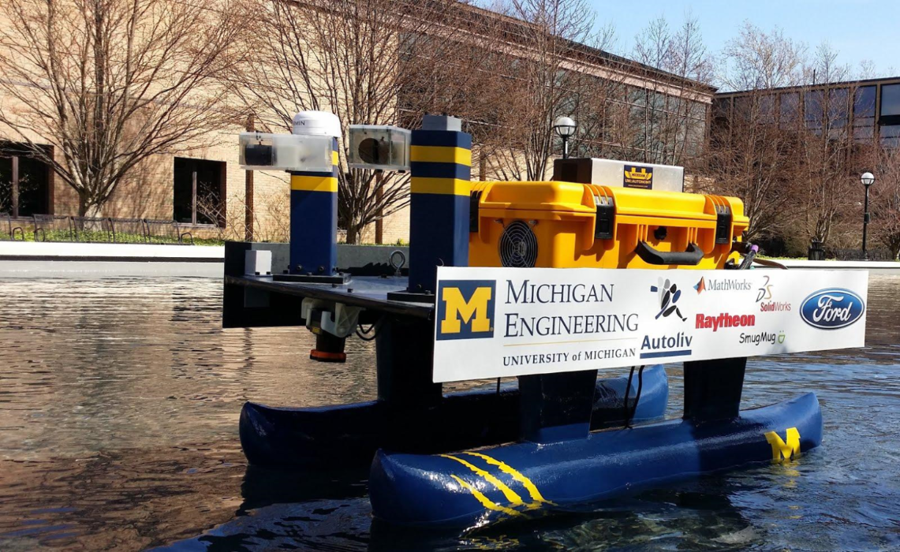

Hugh Jackman, named after the equally impressive actor, acquired 8th place in the 2014 RoboBoat competition. Even though Hugh Jackman's performance did not reach our high standards, numerous positive changes were enacted on Hugh compared to his past configurations. Hugh has completely new, taller hulls which allows our electronics to be more protected from water splash. Additionally, with a brand new electric box, Hugh is more organized and more efficient than ever. With all of these revisions, Hugh has successfully paved the way for future iterations to perform exceedingly well. UM::Autonomy's 2014 goal was to practice multiple, full-scale tests including our own mock competition and general testing in the Lurie Fountain.